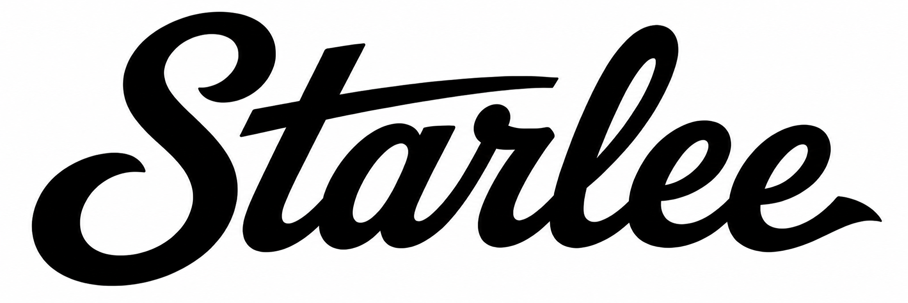

Library
No captures match this search.

Your library is empty.
1Open an article or video in Chrome.
2Click the Starlee icon in your macOS menu bar.
3It lands in your Library, which you can query with the Starlee Codex Plugin
No captures match this search.

Your library is empty.
1Open an article or video in Chrome.
2Click the Starlee icon in your macOS menu bar.
3It lands in your Library, which you can query with the Starlee Codex Plugin
Starlee is your private, lifelong memory — everything you read and watch, captured and searchable. Let’s get the pieces in place.
Use the Chrome extension to save articles and YouTube videos with one click.
Install the Starlee Codex plugin so you can ask questions and get answers grounded in everything you’ve saved.
Optional, but it’s where the magic happens — you can also do this later from Settings.
The Starlee icon lives up in your menu bar — it’s always there.
Over the years this becomes a record of everything you’ve ever learned — something you can pass on one day.